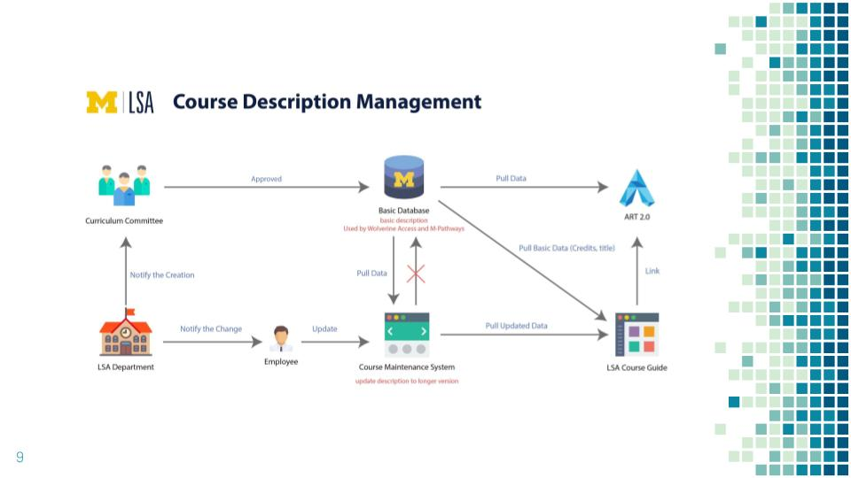

The Challenge
Work with a team of students to help a University client gather up-to-date course descriptions that will appear in a course information data visualization tool.
Roles
Interviewer, Editor, Consultant
Process
My team conducted a series of interviews with several offices on campus to learn about the differences in course description creation and management. I was both interviewer and note-taker for other team members’ interviews, and my team met after each interview to go over the key takeaways from the sessions.
Based on our notes from these debrief sessions, my team constructed an affinity wall to determine our interviewees' main paint points and common threads within the interview data. We grouped quotes and observations that we had collected throughout the semester into a hierarchy. We then created a second level to our hierarchy to determine overarching themes within our data.
From the affinity wall exercise, we discovered that the main issues affecting our client were as follows:
- Technical constraints due to massive amounts of course data housed by different campus offices
- Communication breakdown between our client's office and individual colleges, leading to confusion and lack of awareness regarding the data visualization tool
- Lack of a centralized process to process course information impeded collaboration across campus offices
Solution
My team brainstormed and sought feedback from classmates and instructors on our solutions. The ideas we proposed to our client included:
- Regular all-hands meeting to improve communication between departments
- Collaboration between our client and the University IT department to revamp the course information form, allowing professors and administrators to enter complete information and eliminating the need for shadow databases
- Working with the IT team to sync existing shadow databases with the data visualization tool
The culmination of this semester-long endeavor included a final report and presentation analyzing the key themes we had uncovered during the interview process and offering solutions.
Discussion
Overall, my team had a great experience working with our client and learning more about the ins and outs of University administration. A few key takeaways:
- Our team encountered a learning curve as far as figuring out how to balance constraints (class requirements) and client expectations. What our client needed did not line up with the “typical” schedule and process that had been provided by our instructors. Through consistent communication with both clients and instructional staff, our team was able to adjust on the fly and provide useful solutions. While this ended up being a bit more up-front work, this project was a useful exercise in creatively working around constraints.
- We presented our findings and solutions to classmates, instructors, and clients. While the information conveyed was essentially the same for each group, the delivery differed significantly. I learned a great deal about “knowing my audience” and presenting information in a format that made sense for each group. While creating several versions of each presentation took some time, I believe that a tailored approach to presenting sparked more thoughtful discussion than if we had not thoughtfully considered our audience’s needs.